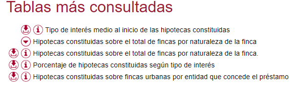

Por fin ya tienes una idea bastante clara sobre el Big data. Es el momento de aplicar lo aprendido, cumplir tu objetivo y presentar los resultados de este reto.
Por fin ya tienes una idea bastante clara sobre el Big data. Es el momento de aplicar lo aprendido, cumplir tu objetivo y presentar los resultados de este reto.
Para ello puedes utilizar varias opciones.
¡ Ánimo que estamos llegando al final !
Por fin ya tienes una idea bastante clara sobre el Big data. Es el momento de aplicar lo aprendido, cumplir tu objetivo y presentar los resultados de este reto.
Para ello puedes utilizar varias opciones.
¡ Ánimo que estamos llegando al final !
Seguiremos la siguiente secuencia:
La forma más fácil de obtener un buen conjunto de datos sobre cualquier tema es acudir a la web del INE.
Selecciona un tema de los 10 categorías disponibles:

Escriba su contenido...
Tras la selección de subcategoría tendremos un apartado de "Tablas más consultadas" como en el ejemplo de la imagen.
Podemos ver el contenido o descargarnos los datos con el símbolo de descarga a la derecha.
 CSV es el formato más universal y es fácilmente reconocido por cualquier herramienta para trabajar con datos.
CSV es el formato más universal y es fácilmente reconocido por cualquier herramienta para trabajar con datos.
Podemos seleccionar:
En cualquier caso debemos recordar el separador utilizado.
Sea cual sea la herramienta que utilices, debes realizar una presentación en la que muestres los gráfico obtenidos y las conclusiones que se pueden obtener de su análisis.
También aquí tienes varias opciones, consulta a tu profesor o profesora sobre cuál es la más adecuada:
Si necesitas ayuda con la presentación puedes consultar la Guía de competencia digital en el apartado Presentaciones. Ir a la Guía de Competencia Digital
Al realizar esta actividad has tenido que poner en juego todo lo que sabes. A veces para aprender tenemos que trabajar de forma constante. Cuando nos esforzamos mucho nuestro trabajo es valorado por nuestras profesoras, profesores y familiares. Pero lo más importante es que nos sentimos muy contentos por el trabajo realizado.
Te animo a que sigas trabajando para que puedas aprender y seguir mejorando.
Obra publicada con Licencia Creative Commons Reconocimiento No comercial Compartir igual 4.0